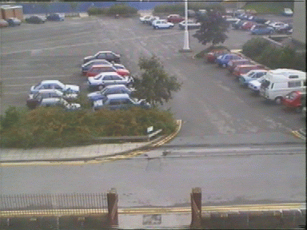

Tony Heap's Homepage
 This page is very much under construction at the moment -
one day I'll have time to do a better job!
This page is very much under construction at the moment -
one day I'll have time to do a better job!

Research
I am currently investigating robust, model-based methods for tracking deformable objects. I am particularly interested in tracking hands with a view to recognising gestures.
Publications
Real-Time Hand Tracking and Gesture Recognition using Smart Snakes, Proc. Interface to Real and Virtual Worlds, Montpellier, June 1995 (available as Olivetti Research Limited Tech Report 95.1).
Extending the Point Distribution Method Using Polar Coordinates, Proc. Computer Analysis of Images and Patterns, Prague, September 1995 (available as SCS Tech Report 95.5).
Automated Pivot Location for the Cartesian-Polar Hybrid Point Distribution Model, Proc. British Machine Vision Conference, Birmingham, September 1995 (available as SCS Tech Report 95.26).
Tony Heap - ajh@comp.leeds.ac.uk